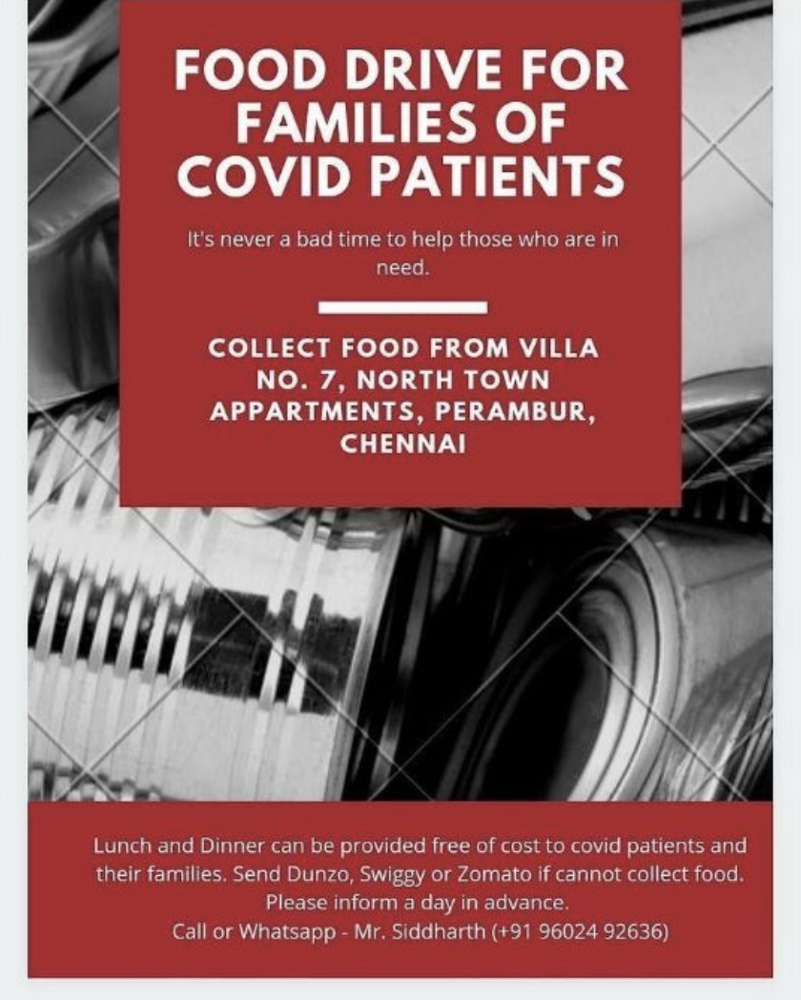
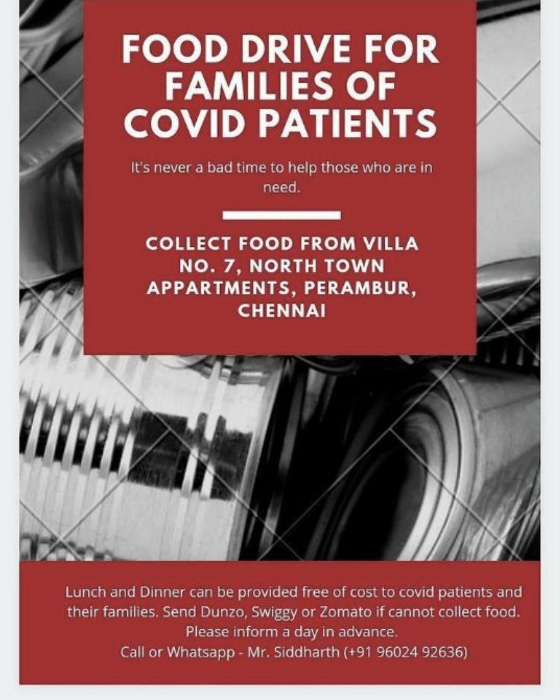

Fat.
It’s not a bad word, it does not mean ugly, it does not mean lazy, it does not mean unhealthy, it does not mean worthless. People come in different shapes and sizes, and that’s just how it works.
Body shaming is a bit of hard topic to understand if you haven’t been through it yourself. Think about those people who have felt terrible about their bodies because of their friends, family, strangers, and trolls on the internet and the walls on school bathrooms.
It is ridiculously infuriating when people are unnecessarily mean about other people’s bodies. There was no reason to make that comment, what is so difficult about staying quiet and leaving a person not feeling bad about themselves?
What do they gain from making someone feel horrible about themselves? Nothing, maybe a fleeting moment of power but that’s gone as soon as it comes, so why? No amount of reasoning can justify this. Don’t joke about people’s bodies even if you’re friends with them. They may laugh it off, but deep down they feel worthless.
To all the boys, you’re absolutely beautiful, and girls, you’re incredibly handsome, regardless of your body type. Society’s crazy expectations do not dictate your worth. Exercise to be fit, not skinny. Eat to nourish your body and always ignore the haters, doubters and unhealthy standards of beauty. You’re worth more than you think.
Something I have noticed now are people are obsessed over their own and each other’s height. What even is the point of that? We are wonderful the way we are. Tall girls/boys have amazing and beautiful long legs. So be proud, you can’t change it and there is nothing wrong in being tall. To all my short folks, remember that dynamite comes in small packages.
So always remember that your body is not wrong, society is. Height and weight are just numbers. Be proud of who you are and let’s stop body shaming. Not only others, but ourselves too.
It felt as if all the light in the world had been sucked away by a black hole. The sky was a blanket of darkness, the stars were pretty splatters of light, and the moon had vanished, gone away like it had never existed at all.
I stopped to rest but something didn't feel right, I felt as if something was chasing after me, taking advantage of the few minutes I stopped to take a breath. I slept in fear that night. My imagination had wandered free, what would I be doing the next day?
I woke up to see the sun starting to rise. It was a beautiful sunrise, the warm tones of the sun and the light blue sky made for an extravagant umber, the clouds were all silver-lined, it was a breath-taking view. It was truly a sight to behold, a feast for my drowsy eyes.
A few birds were chirping happily, sitting on a tree like they had not a care in the world. I hoped and dreamt that one day, I would be at least half as happy as they were. As I gazed at the magnificent scenery, I thought as soon as I had gotten my hands on the medicine and gotten it back to the hospital I knew I would be one step closer to happiness. Staying in that other hospital for a month really got to me, I was almost forgetting how the hospital I was familiar with looked. Despite it being my place, my home, it was verging at the end of my memory. I reminded myself that I was on this mission just for them.
I was so lost in thought while I walked along that I failed to notice there was a tremendous stretch of crops. In the vast expanse of land, there were vegetables, fruits, trees, and so many varieties of flowers! Tulips, roses, daisies, gladioli, orchids, and so many more! It felt like I was in Wonderland ever after the dreary month at the hospital.
There were plants for as far as my vision could go, all the way until the horizon and looked as if they touched the sky! I was in luck as I had run out of food too, I ate as much as I could because I knew I would need it, and stuffed some more in my baggy pockets and backpack. After the meal I reminded myself I needed to get to the medicine, after all, I was the only one who could get it.
At the corner of my, I could see a dark, gloomy forest, and I knew that was where I needed to go. As I got closer, I found out it was more of a boggy marsh than the woods. The forest floor was covered with leaves from green, yellow, orange and burgundy. Ferns and small plants growing here and there and green velvet-like plants grew on rocks and dead wood while the trees were covered in moss, the soil was almost clay-like to the touch. If you didn't know any better you could mistake it for a swamp, the only thing by which you could tell it was a forest was the enormous canopy, the trees were so tall and thick, they prevented almost all the sunlight from reaching the lush forest ground.
As the light gradually faded behind me, I couldn’t see a thing. It was almost as if I was blind. I reached into my backpack and tried to find my flashlight but I kept grabbing other things instead. After a few minutes of grumbling and searching, I found some matches and a candle instead, not what I was looking for but by then I had given up by then. I stroked the matchstick along the side of the box and was almost scared out of my wits at the sight in front of me. I didn’t even notice the matchstick burn out till it scalded my fingers. When I saw what was in front of me. I screamed I could hear birds flying away and animals scurrying off when they heard the blood-curdling scream.
There was a human skull in front of me, at my feet.
It was almost like... someone had left it there, just for me.
Insecurity.
The feeling of inadequacy that a lot of us experience from time to time. It makes us feel anxious about everything (school, work, looks, etc). But what causes it?
Insecurities are brought on when we recognize differences between ourselves and others, either on our own or when someone else points it out. They occur when we experience a consequence for being different than others or when we feel that we don’t measure up to what we “should be”. For example, when a child is teased at a playground for being bigger than others, the child could grow up feeling insecure about their weight.
Insecure people always live in fear of judgement. They avoid meeting new people because they don’t believe that they’re good enough. They never think they’re good enough. They could be the smartest, nicest, most driven person, but they’ll never see themselves that way. They aren’t true to themselves. They try to be like chameleons in social gatherings or when meeting people so they can try to change how they are because they’re not comfortable with themselves.
Insecurity makes people live in a world of denial. They deny everything, good or bad, and end up staying on their unhappy track. They’re always paranoid about whether other people are judging them and think the other people talk about them behind their back. These people almost always end up missing out on the good things in life because they’re so rooted to the fact that they’re not good enough or that anything they do is bound to fail.
Feeling insecure can often lead to being self conscious and can end up making you lose your self esteem. In the long run, insecurity can really affect mental health in many ways. People say, ‘love yourself’ and ‘stay true to yourself‘, but you don’t actually know how to. Really, not many people do.
Many people think that the solution to stop being insecure is to hide their insecurities but it’s really not. We cannot hide something that we are insecure about all the time. Even if we could, that would be exhausting. In the long run, the only cure for insecurity is self acceptance. When we stop worrying about what others may think of us, is when we can truly shed our insecurities because we no longer care whether or not we are judged for them. When we accept ourselves, we find that most people do not judge us, and that those who do, don’t matter.
There are more steps to get rid of insecurity though it won’t happen overnight. The second thing to do is to affirm your value. Put yourself before others, in all ways. Adding more self care to your daily routine can help you counter negative thoughts and can help bring up your self esteem and self worth.
This is very important - Embrace the awkward.
There are definitely going to be moments in life where you screw up but that’s just a part of life. Embrace it. And the next time you try that, you’ll do better. Don’t beat yourself up about it because that’s not going to help in anyway. Forgive yourself and understand that by making these mistakes, you’re not any less good. Spend more time with people you love. As soon as you cut out the toxic thoughts from your life, you’ll feel a lot better. And do things that make you happy. Do things that you love whether it’s cooking, or working out, or anything else.
Last but certainly not least, try new things. The more you push yourself to try things that are out of your comfort zone , the more you start embracing yourself. There are some smaller steps you can add to your daily routine to help, like trying new food, or cooking new dishes, basically trying new things every day. Maybe learn a song, or learn a dance, maybe workout, focus on you. If you’re an avid music listener, listen to a couple of songs you love every day, and sing to your heart’s content and don’t worry if others hear you. You’re fabulous just the way you are.
To the people reading this, I may not know you well, but I highly advise you to be self accepting and to treat yourself.
Ever since she was 5, all she wanted was to become an architect. “To build is to create, and to not destroy.” was the motto she lived by. Her ambition was to build housing for the poor who couldn’t afford it.
Every day, she walked to school with Tara; a shy quiet girl just like herself. If either of them were seen alone elsewhere, they were the opposite of attention seekers, drawing as little attention to themselves as possible. But on the 20 minute walk from the apartment they both lived in, on the peaceful curving road filled with birds chirping and lush green trees on either side, they talked only about themselves. With laughter sounding as pretty as those birds, these walks made ever-lasting memories. The pair of them did prefer keeping to themselves, but it all seemed to perish when the other was around. Any walls against humanity were broken down between them, and both felt better when the other was around.
Except on one fateful day, it all changed. She pointed at a car — an unlikely appearance in their small town— on the road they were walking on, telling Tara how perfect she thought it was. Tara, in awe of the glossy black car, walked a little too far into the road when the car swerved wildly. Tara’s smiling face turned to shock as she landed with a thud, blood streaming down her face. Her eyes started looking more to the back of her head, than front. And they were turning misty white.
Stunned, she knelt down and screamed for help. The mechanical wail of the ambulance soothed her ears, taking the pair of them in, though she insisted in a voice hoarse from screaming that it was only Tara that needed help. The paramedics in the ambulance started checking Tara right away. They connected her to a machine that beeped quite loud, though not constantly. When she asked what it was for, the paramedics explained that it was to monitor her heart. And that it was struggling to hold Tara up. Thankfully, the hospital was only a few minutes away. Tara was rushed into a room where nobody except medical staff could be. She was transferred into a room after what seemed like an eternity, and was finally allowed visitors.
She met a heavily bandaged Tara, who was mumbling something along the lines of, “Thank the doctors, okay? Please thank them.” followed by a weak but genuine smile.
That was where everything changed, and something new began building inside her.
That was when she decided to become a doctor. “They’ll need their lives if they need housing,” she decided. And those smiles in return were definitely part of the change of heart too.
Her resolve grew exactly like how Tara healed. With crutches at first, tentative. And slowly morphing into a few steps, spurs of confidence. When Tara could finally walk to school alongside her, she knew exactly what she wanted. She wanted to build people again when they broke. After all, to build is to create, and to not destroy.
Why I became a doctor,
Dr. Meera Ramanan.
Young at Heart
I knew a man, old of age
So weak he could hardly turn a page.
But his brain was sharp as a dart,
And this man was quite young at heart.
He sat in his chair, not walking about
But even so he never gave a pout.
A cheery man, full of life,
He sat there chatting with his wife.
He was never bored and never weary,
If someone is in the room they're never dreary.
This man who was sharp as a dart
Lived his entire life young at heart.
-Shubhaangi
__
I saw Her.
Moments ago, and yet She’s unrecognisable.
Confusion drowns me.
I don’t recognise it just yet, but something about it makes her seem like a long lost friend.
Foreign, and yet Known. Could she be?
It hits me all at once.
Overwhelming, would be an understatement for what I’m feeling.
Suffocating.
It is a long lost friend after all.
a sense of familiarity surrounds Her, but she’s been gone too long for me to truly know.
I push her away as fast as I can; now that I recognise Her.
All she does is wish well for me.
But it’s too late.
She’s gone now, probably baffled by my reaction.
How I long she’ll come back though.
-Anhiti
__
She sells nature’s most sacred belonging
To fill the stomachs living on puffed rice, below the
Ribs that cling to their skin
Beautiful, it’s considered.
Gorgeous to those with ribs that can’t be counted from afar
Under lights that can’t be seen Clearly
Though it wouldn’t cost a blink of an eye
And for their children,
Who were given equal glory as a princess at birth
But alas, abandoned
For they had wives to gift cheese to,
The rotten thing, which
Could remove hunger, for years
Oblivious, they must be
To own cheese that is worth more
Than her children in today’s world
And yet, and yet consider
Hungry bodies beautiful
- Anonymous
__
Spaces aplenty,
Not a drop to drink,
I walk and hop,
For a drop and not too many,
The sun throwing light,
Showing me every possibility
Yet my hopes seem bleak
For the rivers, once too pure to be touched,
Now run black,
Is it a sign?
A sign of the impending doom?
And as I begin to give up,
I see in distance,
A figure too pristine,
She flashes a smile at me with a bowl of water and a heart of gold,
I fly to her with gratitude
Maybe there is hope and
Maybe I have just been looking in the wrong places...
- Karunya
__
Go away corona
Corona, Corona! You’re rank number 1
Coming to towns, later rid of everyone!
Born in China
Tackled down America
Came to India
Ready, aim, Infecta!
Corona, Corona, you must go away;
Take your crown to a planet that fits you may!
You linger outside,
We stay inside,
Which requires us,
To kick rocks.
Corona you must go,
So we can move to and fro!
- Arnav
Are jams just pickled fruits with sugar instead of salts and spices?
There could be so many more colours than what the human eye could see and we would never know. In fact we wouldn’t know if what you and I see as a certain colour like green is even remotely close, we might be seeing totally different colours but we would never know because we can’t experience life through different beings’ eyes. Scary if you think about it.
If “anything is possible” isn't it possible for something to be impossible? Life is trippy bro.
What if books were in dark mode. Instead of having white paper we could have black paper with white ink. And as a friend said, “blackeners instead of whiteners”.
This is a well-known fact but the fear of long words is Hippopotomonstros-esquippedaliophobia. Geniuses. They totally did it for the memes.
Technically according to the big bang theory, every single thing that exists today was just because of one little atom. Should I be scared?
In the movie ‘Cinderella’ the fairy godmother told Cinderella that all her magic vanishes at 12am but the shoes still survived, and the fact that Cinderella was the only one in the entire kingdom to have that shoe size is suspicious.
Santa is the opposite of robbery; he breaks into your house and gives you presents.
Uber is the opposite of a kidnap, you get into someone’s car and they take you home.
 

The pandemic and quarantine led us to go to school in a new way. We haven’t been inside our new classrooms or even seen our wooden benches with years of scraped and repainted paint in more than a year now. Gone are the assemblies each morning where hundreds of us droned the prayer half-awake wishing we were back in bed dreaming about a million different things. Now any social interaction is removed, all our progress in making face-to-face conversation destroyed. It’s not kilometers away now, only a few feet away, on our laptops. Now, I really don’t think the pandemic will do away in a few months or even one or two years, but when it does, will we be ready for our school?
For spending 9 long, dreaded periods instead of just 4 in the comfort of home? Waking up at six in the morning again, and much more homework. For being watched during tests, in person. For not being able to chat with different friends on numerous newly created texting apps. Would we be able to catch up to how fit we were last year? Would it be possible for each of us to run endless circles on the school grounds like we used to? Most importantly, being surrounded by actual people? Not the virtual icons of trees and things that only represent your friends, but people you’d have to make eye contact with and laugh at jokes for, not use the emoji to satisfy a requirement.
We’ve made so many friends from other sections and even grades during lockdown when earlier whom we never even used to spare a glance to. Will we still stay friends?
Further, this year, all our states of mental health have changed drastically. It isn’t fair at all that we’re being confined to tiny screens, and our parents telling us to get of it. Because even if we spend 4 hours on it, it doesn’t make up for the social interaction we had a year and a half ago. The number of people we met daily would average to at least 20 before the pandemic, ranging from people at school, to after school classes, the walks back home or the van rides back home, and anything else. Now it’s about a tenth, them being our parents, and maybe more if you have siblings. How are we going to adapt to 20 again? Can we do that quickly enough?
These are the questions that have been running through our minds, as school ends and hope for the next academic year begins. Despite everything, we hope that things can get back to normal as soon as possible, and we can see for ourselves what would happen.
Moukthika : Our Artist!!!! Her art skills are next level - Even buzzfeed agrees that she’s artsy and she cooks really well.
Bhargavi: She’s our editor and personal kpop spammer; expert at burning toast. She’s also everyone’s (self proclaimed) favourite unnie.
Shubhaangi : Kpop spammer #2!! She’s the photographer, and sides with Bhargavi on bad (they disagree) puns.
Vedika :The one most known for her positivity, she has a adorable lab named Lily. She also contributed to the beautiful photography along with Shubhaangi.
Aravind : Fellow youtube animator addict, he's known to be talkative and lighten the mood anywhere he goes (: he contributed an article.
Paddy: known by the name ‘Evil.’, She’s our evil, chaotic teammate. she’s the inventor of a language we’re proud to use. She talks equally as often as Favorite Unnie.
Anhiti : The youngest here, she contributed a poem and made the website for the particle. Famous for convincing us to save the reefs – budding artist and author. (Don’t tell her, but she’s basically kpop spammer #3.)
particle0221@gmail.com